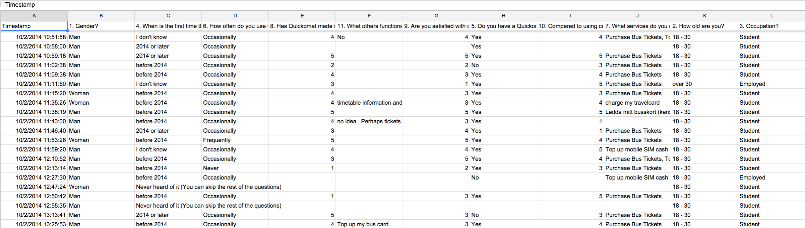

Half-time Project Presentation
for TDDC34
Team Stockholm
Johan Angelstam | Guanqun Li
Renquan Wang | Yunsheng Kong
Quickomat
source: http://www.quickomat.com/affaersid.html
Index
- Introduction
- Perspectives on Evaluation
- Theoretical Framework
- Method
- Next Step
Introduction
- Background
- Vending Machine
- Tickets
- Top up Phones
- Parking Tickets
- Stakeholders
- Service Providers
- Commuters
- The Machine Manufacturer
Perspectives on Evaluation
Social Evaluation
- Interface-Usability
- Safety of Public Transportation
Theoretical Framework
- Empirical Framework
- Heuristic Evaluation of Interface-Usability
- Theory-Based Framework
Theoretical Framework
Empirical Framework
- Heuristic Evaluation of Interface-Usability
- A set of evaluators to examine the system
- Compliance with regcognized usability principles
- Evaluators work indivisually but aggregated in the end
- Evaluation of Safety
- Crime-rate as a measure of safety
- Perception of Safety
Heuristic Evalualtion
Advantages of heuristics
- Fast
- Easy to carry out
- Flexible
Heuristic Evalualtion
Examples of heuristics
- Avoid unnecessary visual elements
- Make text and elements visible with sufficient contrast
- Avoid unnecessary steps
- ...
Theoretical Framework
GQM Framework
Evalualtion Methods(till now)
- Questionaire-Based Methods
Questionaire Response

Next Step
Analysis & Discussion & Conclusion
- Task Analysis
- Data Collection Analysis
Thank you for your attention!
Questions?